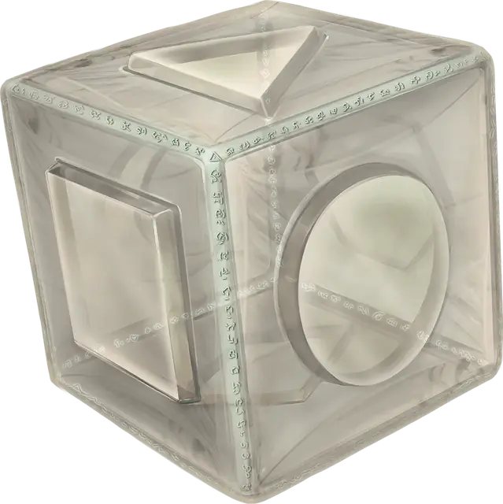

Куб силового поля
Cube of Force
Чудесный предмет, редкий (требуется настройка)

Рекомендованная стоимость 501-5 000 зм
Это кубик с длиной ребра около дюйма. На каждой грани есть характерная метка, на которую можно нажать. Вначале у куба 36 зарядов, и он ежедневно восстанавливает 1к20 зарядов на рассвете.
Вы можете действием нажать на одну из граней куба, тратя при этом указанное в таблице число зарядов. У каждой грани свой эффект. Если в кубе не осталось достаточного числа зарядов, ничего не произойдёт. В противном случае возникает барьер из невидимого силового поля, формирующий куб с длиной ребра 15 футов. Барьер создаётся с центром на вас, перемещается вместе с вами и существует 1 минуту, пока вы не нажмёте действием на шестую грань куба или пока в кубе не кончатся заряды. Вы можете изменить эффект барьера, нажав на другую грань куба и потратив нужное количество зарядов, сбрасывая при этом счётчик длительности.
Если из-за перемещения барьер вступает в контакт с твёрдым предметом, который не может пройти сквозь поле, вы не сможете приблизиться к этому предмету, пока поле существует.
| Грань | Заряды | Эффект |
| 1 | 1 | Через барьер не проходят газы, ветер и туман. |
| 2 | 2 | Через барьер не проходит неживая материя. Стены, пол и потолок могут проходить, если вы того пожелаете. |
| 3 | 3 | Через барьер не проходит живая материя. |
| 4 | 4 | Через барьер не проходят эффекты заклинаний. |
| 5 | 5 | Через барьер не проходит ничего. Стены, пол и потолок могут проходить, если вы того пожелаете. |
| 6 | 0 | Барьер исчезает. |
Куб теряет заряды, когда барьер становится целью определённых заклинаний или вступает во взаимодействие с эффектами определённых заклинаний или магических предметов, как показано ниже.
| Заклинание или предмет | Потеря зарядов |
| Огненная стена [wall of fire] | 1к4 |
| Радужные брызги [prismatic spray] | 1к20 |
| Распад [disintegrate] | 1к12 |
| Рог взрыва [horn of blasting] | 1к10 |
| Создание прохода [passwall] | 1к6 |